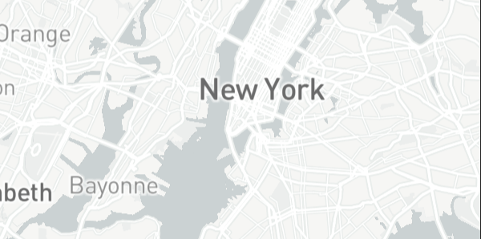

NEW YORK
 After a hellish two years, few places on the planet were as
ready to relaunch as NYC.
POPULATION
METRO: 19,294,236
HIGHLIGHT RANKING


After a hellish two years, few places on the planet were as
ready to relaunch as NYC.
POPULATION
METRO: 19,294,236
HIGHLIGHT RANKING
The greatest city in America—lauded and crowned in our rankings for the past seven years and in countless others for many more—was a ghastly reminder during the pandemic of the vulnerability of even the colossal and seemingly all-powerful; we saw here what awaited the rest of the country. And the world. As early cases spiked, Gotham became the nation’s nightmarish coronavirus core.
It was this city-scale tragedy that first landed in the crosshairs of the sniping haters declaring that the big, vibrant, cheek-by-jowl city experiment was finally over. But for resilient New Yorkers, those attacks of course merely steeled their resolve for better days amid the death, protest and malaise.
Those better days are here. And the city is doing everything in its power to bring back not only apprehensive New Yorkers whose hunger for regular bites of the Big Apple has for two years been sated instead by takeout or delivery and a
scrolling thumb tic, but also the nearly 70 million people who visited in 2019 and invested $46 billion across its expansive quilt of Sights & Landmarks (ranked #13 globally).
“Fortunately, we’re anticipating being back to 85 percent of 2019 levels within the year,” said Chris Heywood, former executive vice president, global communications at NYC & Company, the destination marketing organization of the five boroughs. “We have benchmarked 2024 to be back to previous record-setting numbers.”
First order of business: getting those not already here to town. Fortunately, the suspension of travel for more than a year expedited the long-planned transformations of New York’s international gateways. LaGuardia Airport, Newark Liberty International Airport and John F. Kennedy International Airport all have new terminals, with the new Terminal B at LaGuardia alone boasting 35 gates (to say nothing of the FAO Schwarz on site). And, yes, a new Terminal C should be open by the time you read this. Newark Liberty International’s updated Terminal A has opened with 33 new gates and construction will start later this year on a new, congestion-easing 2.5-mile elevated guideway train system. The infra- structure year ends with JFK’s Terminal 8 unveiling 130,000 square feet of new and renovated space. The New Terminal One at JFK opens later this decade.
Back on the ground, Moynihan Train Hall is a new 17-track expansion of Penn Station that, if you squint, can pass for a northern European transit hub from the future.
With so many expected arrivals, NYC is certainly making sure everyone has a place to stay. More than 9,000 new hotel rooms have either opened or will be coming online this year, including the already opened (and headline grabbing) Aman New York, an “urban sanctuary” on Fifth Avenue. Also open is the Ritz-Carlton, NoMad, a temple dedicated to the nearby and recently opened Madison Square Park, as well as The Thompson Central Park, a renovated property in Midtown. The build-out stretches across the city, with new Renaissance Hotels properties in Harlem and Flushing opening in late 2022. Moxy Hotels is also opening multiple locations in the Lower East Side and Williamsburg.
At street level the city’s firehose turns cultural, with massive museums (#5 globally) going all in on expansions and new openings.
The Louis Armstrong House Museum in Corona, Queens, is undergoing a physical and programmatic expansion for a new cultural center, expected to debut later this year, that includes an interactive exhibit, archival collections, a 68-seat jazz club and store. And the Bronx Children’s Museum is also opening this year after moving to a new home in Mill Pond Park. Dia Chelsea is a new contemporary installation space, and the Frick Madison (the temporary home of the Frick Collection) has opened in the Breuer on Madison Avenue in a building formerly used by the Met. Speaking of the Met, just last year New York’s 152-year-old cultural institution (housing 1.5 million objects and hosting seven million visitors in a non-pandemic year) announced a $500-million reno of its modern and contemporary wing. Not as storied but equally New York is the new Museum of Broadway, the first permanent museum dedicated to the famed heartland of the stage, just opened in Times Square with a behind-the-scenes look at the creation of major theater productions.
And the big shows are back, too (with the odd COVID-related cancellation this past spring): Hugh Jackman returns for The Music Man; Sarah Jessica Parker and Matthew Broderick star in a revival of Neil Simon’s Plaza Suite… even Daniel Craig in Macbeth.
For those who prefer their urban exploration outdoors, classics like the High Line and Central Park are joined by the city’s newest green space, Little Island—2.4 acres floating on the Hudson near the Meatpacking District on the site of an old pier. Like most things here, you have to see it to believe it.
When it’s your turn to return to America’s best city, do yourself a favor and make time to see the phoenix rise from above: there are the classics, like the Empire State Building and the Top of the Rock, but there are also new spectacular perches, like SUMMIT One Vanderbilt and its all-glass exterior elevators, called Ascent. Go up, look down and breathe out.
Yes, these New York facts are starting right at the beginning! Did you know that New York was, at first, not New York at all? The original name was New Amsterdam as Dutch settlers were the first to arrive in the area around 1624. But in 1664, the English took over and renamed the city in the Duke of York’s honor.
Not only that, some of the most iconic New York places had original Dutch names. Wall Street was Waal Straat, Harlem was Haarlem, and Brooklyn was Breukelen.
One of our favorite fun facts about New York has to be about food. The first pizzeria in the US opened in New York City in 1905, as certified by the Pizza Hall of Fame. Lombardi’s Pizza on 32 Spring Street is still going strong and it is now one of around 1,600 pizzerias in the city. New Yorkers have noted that when the price of subway tickets goes up, pizza does too. They call it “the pizza principle.” Now, if someone could convince Lombardi’s to revert back to their 1905 pricing of 5 cents a slice, there would be some very happy subway riders.
No list of interesting facts about New York is complete without mentioning the city’s diverse population. As a collective, the city’s citizens speak around 800 languages. Almost half of New York households speak more than one language and one-third are born overseas. And because New York has the biggest population of any US city, 1 in 38 people in the United States are New Yorkers.
Tourists from all over come to stand on Westminister Bridge and take a selfie next to Big Ben and the Houses of Parliament. Unfortunately, not one of them ever leaves with a picture of it. This world-famous landmark actually named the Elizabeth Tower - Big Ben is the name of the bell that lives inside. So you won't snap a photo of Big Ben but if you're lucky you might get to hear it
New York's famous Grand Central Terminal, there is an unbelievable architectural marvel at play. If one person stands in one corner of the tiled wall and another stands on the opposuite side, they can whisper to each other.
Though you might not see many locals strolling around the city in only their pants and shoes, they could if they wanted to. And that goes for people of all genders. You might be wondering what the laws on toplessness are like elsewhere in the US. They are a little fuzzy. In many states, women’s breasts fall under the umbrella term “private parts” so men can be topless in certain places that women cannot.
And in some states, there are particular cities where it is illegal. But topless freedom is legal in the City of Dreams. So in New York, the old shop window sign should say, “no shirt? No problem!”
We promise these facts about New York are 100% true, but we understand why this one sounds made up. Because if you have ever sat in the back of a yellow taxi cab in traffic, you know New Yorkers honk their horns.
But unless it is an emergency situation, drivers are not allowed to make excessive noise. That law also includes car alarms and the NYPD can issue fines of up to $350 for offenders.
Lightning strikes seem like an uncommon occurrence. But one of the fun facts about New York is that lightning hits the Empire State Building around 25 times per year! We are very thankful that modern engineers know how to absorb and deflect such a massive amount of energy from tall buildings.
Before naming itself after the New York Times newspaper, it was Long Acre Square. Not very exciting? Nope, the name originated in a London district and was a simple residential neighborhood. But the street lights and billboards transformed into the chaotic place that it is today.
If you didnt think we would include the Statue of Liberty because it was talked about earlier think again somewhat ironic that Lady Liberty is an iconic symbol of freedom and the American Dream when she started her life in Paris. French sculptor's Bartholdi and Eiffel built her to celebrate the friendship between the US and France. You likely recongnize the latter sculptor's name from another French structure!